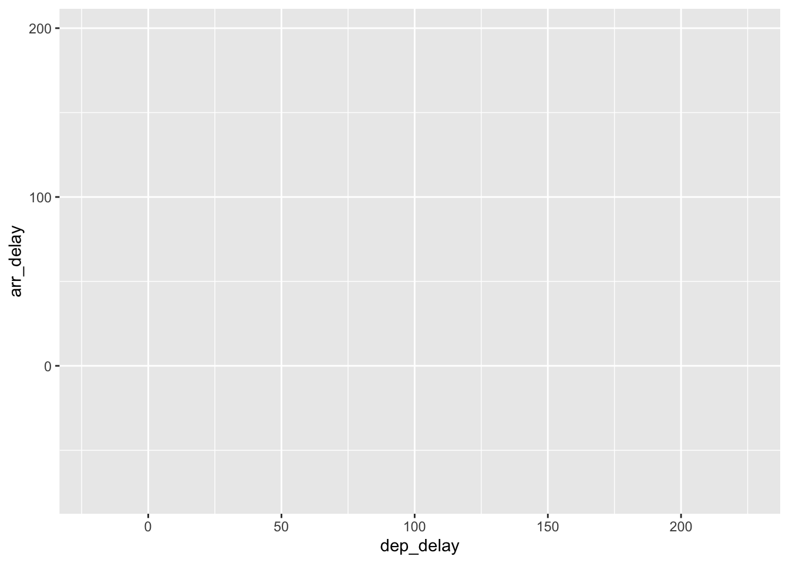
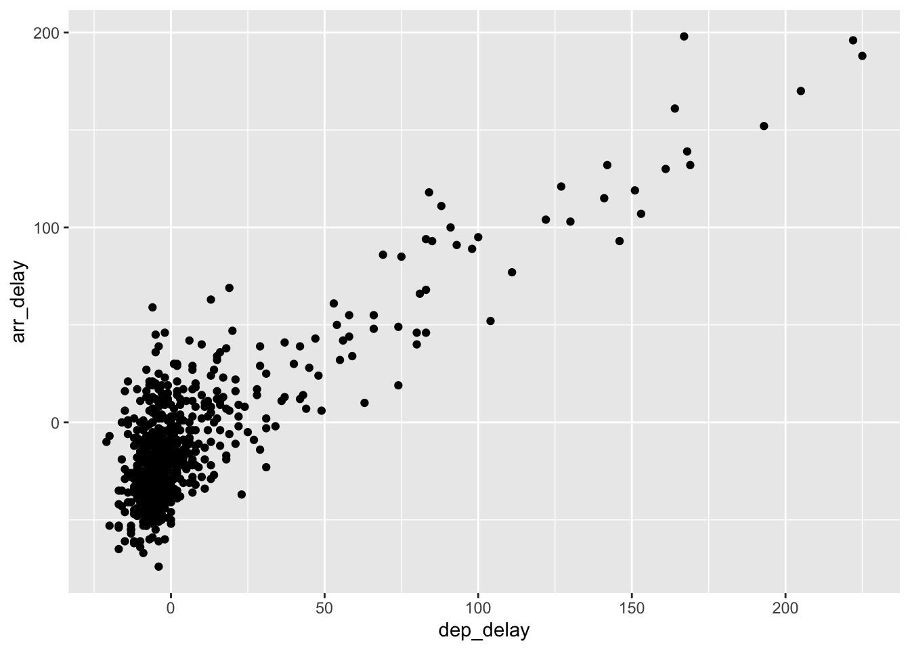
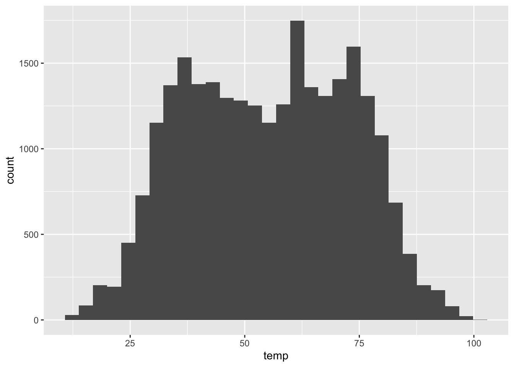

Code
#if(!require(nycflights13)){
# install.packages("nycflights13")
# library(nycflights13)
#} else {
# library(nycflights13)
#}#if(!require(nycflights13)){
# install.packages("nycflights13")
# library(nycflights13)
#} else {
# library(nycflights13)
#}In this post we’ll be usig the nycflights13 data again, and this is because it has many other dataframes within it, so that we can use some of dplyr’s relational function.
In fact there are the following datasets within this package:
flights which contains information about all the flights out of New York, and is the most central df
airports which gives us information regarding the airports, ie:the name and location
planes which gives us information regarding particular planes, used in flights
airlines gives information regarding airlines
weather which gives us the weather conditions at the departing city/aiport in New York.
In this post we’ll take a look at flights, planes, and airports in the following 2 questions.
So the first question we’ll take a look at is:
library(nycflights13)
library(tidyverse)── Attaching core tidyverse packages ──────────────────────── tidyverse 2.0.0 ──
✔ dplyr 1.1.2 ✔ readr 2.1.4
✔ forcats 1.0.0 ✔ stringr 1.5.0
✔ ggplot2 3.4.2 ✔ tibble 3.2.1
✔ lubridate 1.9.2 ✔ tidyr 1.3.0
✔ purrr 1.0.1
── Conflicts ────────────────────────────────────────── tidyverse_conflicts() ──
✖ dplyr::filter() masks stats::filter()
✖ dplyr::lag() masks stats::lag()
ℹ Use the conflicted package (<http://conflicted.r-lib.org/>) to force all conflicts to become errorslibrary(ggplot2)
view(flights)dim(flights)[1] 336776 19summary(flights) year month day dep_time sched_dep_time
Min. :2013 Min. : 1.000 Min. : 1.00 Min. : 1 Min. : 106
1st Qu.:2013 1st Qu.: 4.000 1st Qu.: 8.00 1st Qu.: 907 1st Qu.: 906
Median :2013 Median : 7.000 Median :16.00 Median :1401 Median :1359
Mean :2013 Mean : 6.549 Mean :15.71 Mean :1349 Mean :1344
3rd Qu.:2013 3rd Qu.:10.000 3rd Qu.:23.00 3rd Qu.:1744 3rd Qu.:1729
Max. :2013 Max. :12.000 Max. :31.00 Max. :2400 Max. :2359
NA's :8255
dep_delay arr_time sched_arr_time arr_delay
Min. : -43.00 Min. : 1 Min. : 1 Min. : -86.000
1st Qu.: -5.00 1st Qu.:1104 1st Qu.:1124 1st Qu.: -17.000
Median : -2.00 Median :1535 Median :1556 Median : -5.000
Mean : 12.64 Mean :1502 Mean :1536 Mean : 6.895
3rd Qu.: 11.00 3rd Qu.:1940 3rd Qu.:1945 3rd Qu.: 14.000
Max. :1301.00 Max. :2400 Max. :2359 Max. :1272.000
NA's :8255 NA's :8713 NA's :9430
carrier flight tailnum origin
Length:336776 Min. : 1 Length:336776 Length:336776
Class :character 1st Qu.: 553 Class :character Class :character
Mode :character Median :1496 Mode :character Mode :character
Mean :1972
3rd Qu.:3465
Max. :8500
dest air_time distance hour
Length:336776 Min. : 20.0 Min. : 17 Min. : 1.00
Class :character 1st Qu.: 82.0 1st Qu.: 502 1st Qu.: 9.00
Mode :character Median :129.0 Median : 872 Median :13.00
Mean :150.7 Mean :1040 Mean :13.18
3rd Qu.:192.0 3rd Qu.:1389 3rd Qu.:17.00
Max. :695.0 Max. :4983 Max. :23.00
NA's :9430
minute time_hour
Min. : 0.00 Min. :2013-01-01 05:00:00.00
1st Qu.: 8.00 1st Qu.:2013-04-04 13:00:00.00
Median :29.00 Median :2013-07-03 10:00:00.00
Mean :26.23 Mean :2013-07-03 05:22:54.64
3rd Qu.:44.00 3rd Qu.:2013-10-01 07:00:00.00
Max. :59.00 Max. :2013-12-31 23:00:00.00
str(flights)tibble [336,776 × 19] (S3: tbl_df/tbl/data.frame)
$ year : int [1:336776] 2013 2013 2013 2013 2013 2013 2013 2013 2013 2013 ...
$ month : int [1:336776] 1 1 1 1 1 1 1 1 1 1 ...
$ day : int [1:336776] 1 1 1 1 1 1 1 1 1 1 ...
$ dep_time : int [1:336776] 517 533 542 544 554 554 555 557 557 558 ...
$ sched_dep_time: int [1:336776] 515 529 540 545 600 558 600 600 600 600 ...
$ dep_delay : num [1:336776] 2 4 2 -1 -6 -4 -5 -3 -3 -2 ...
$ arr_time : int [1:336776] 830 850 923 1004 812 740 913 709 838 753 ...
$ sched_arr_time: int [1:336776] 819 830 850 1022 837 728 854 723 846 745 ...
$ arr_delay : num [1:336776] 11 20 33 -18 -25 12 19 -14 -8 8 ...
$ carrier : chr [1:336776] "UA" "UA" "AA" "B6" ...
$ flight : int [1:336776] 1545 1714 1141 725 461 1696 507 5708 79 301 ...
$ tailnum : chr [1:336776] "N14228" "N24211" "N619AA" "N804JB" ...
$ origin : chr [1:336776] "EWR" "LGA" "JFK" "JFK" ...
$ dest : chr [1:336776] "IAH" "IAH" "MIA" "BQN" ...
$ air_time : num [1:336776] 227 227 160 183 116 150 158 53 140 138 ...
$ distance : num [1:336776] 1400 1416 1089 1576 762 ...
$ hour : num [1:336776] 5 5 5 5 6 5 6 6 6 6 ...
$ minute : num [1:336776] 15 29 40 45 0 58 0 0 0 0 ...
$ time_hour : POSIXct[1:336776], format: "2013-01-01 05:00:00" "2013-01-01 05:00:00" ...# category
unique(flights$carrier) [1] "UA" "AA" "B6" "DL" "EV" "MQ" "US" "WN" "VX" "FL" "AS" "9E" "F9" "HA" "YV"
[16] "OO"# number of category
length(unique(flights$carrier))[1] 16sapply(flights, class)$year
[1] "integer"
$month
[1] "integer"
$day
[1] "integer"
$dep_time
[1] "integer"
$sched_dep_time
[1] "integer"
$dep_delay
[1] "numeric"
$arr_time
[1] "integer"
$sched_arr_time
[1] "integer"
$arr_delay
[1] "numeric"
$carrier
[1] "character"
$flight
[1] "integer"
$tailnum
[1] "character"
$origin
[1] "character"
$dest
[1] "character"
$air_time
[1] "numeric"
$distance
[1] "numeric"
$hour
[1] "numeric"
$minute
[1] "numeric"
$time_hour
[1] "POSIXct" "POSIXt" Alaska <- flights[flights$carrier == "AS", ]
head(Alaska, n=5)# A tibble: 5 × 19
year month day dep_time sched_dep_time dep_delay arr_time sched_arr_time
<int> <int> <int> <int> <int> <dbl> <int> <int>
1 2013 1 1 724 725 -1 1020 1030
2 2013 1 1 1808 1815 -7 2111 2130
3 2013 1 2 722 725 -3 949 1030
4 2013 1 2 1818 1815 3 2131 2130
5 2013 1 3 724 725 -1 1012 1030
# ℹ 11 more variables: arr_delay <dbl>, carrier <chr>, flight <int>,
# tailnum <chr>, origin <chr>, dest <chr>, air_time <dbl>, distance <dbl>,
# hour <dbl>, minute <dbl>, time_hour <dttm>tail(Alaska, n=5)# A tibble: 5 × 19
year month day dep_time sched_dep_time dep_delay arr_time sched_arr_time
<int> <int> <int> <int> <int> <dbl> <int> <int>
1 2013 9 28 1818 1835 -17 2053 2158
2 2013 9 29 728 720 8 1026 1030
3 2013 9 29 1821 1835 -14 2149 2148
4 2013 9 30 742 720 22 1028 1030
5 2013 9 30 1829 1835 -6 2153 2148
# ℹ 11 more variables: arr_delay <dbl>, carrier <chr>, flight <int>,
# tailnum <chr>, origin <chr>, dest <chr>, air_time <dbl>, distance <dbl>,
# hour <dbl>, minute <dbl>, time_hour <dttm># Calculate the missing values ratio for each variable
missing_ratio <- colMeans(is.na(flights))
# Print the missing values ratio for each variable
print(missing_ratio) year month day dep_time sched_dep_time
0.000000000 0.000000000 0.000000000 0.024511842 0.000000000
dep_delay arr_time sched_arr_time arr_delay carrier
0.024511842 0.025871796 0.000000000 0.028000808 0.000000000
flight tailnum origin dest air_time
0.000000000 0.007458964 0.000000000 0.000000000 0.028000808
distance hour minute time_hour
0.000000000 0.000000000 0.000000000 0.000000000 # Load the required package
library(caret)Loading required package: lattice
Attaching package: 'caret'The following object is masked from 'package:purrr':
lift# Apply the Low Variance Filter
low_var <- nearZeroVar(flights)
# Print the variables with low variance
print(low_var)[1] 1# Find the name of the variable with low variance
colnames(flights)[low_var][1] "year"# Load the required packages
library(caret)
library(dplyr)
# Drop non-numeric columns
flights_filtered <- flights %>% select_if(is.numeric)
# Apply the low variance filter
low_var <- nearZeroVar(flights_filtered, saveMetrics = TRUE)
# Identify variables with low variance
low_var_cols <- rownames(low_var)[low_var$nzv]
# Remove variables with low variance
flights_filtered <- flights_filtered[, -which(names(flights_filtered) %in% low_var_cols)]
# Print the filtered dataset
print(flights_filtered)# A tibble: 336,776 × 13
month day dep_time sched_dep_time dep_delay arr_time sched_arr_time
<int> <int> <int> <int> <dbl> <int> <int>
1 1 1 517 515 2 830 819
2 1 1 533 529 4 850 830
3 1 1 542 540 2 923 850
4 1 1 544 545 -1 1004 1022
5 1 1 554 600 -6 812 837
6 1 1 554 558 -4 740 728
7 1 1 555 600 -5 913 854
8 1 1 557 600 -3 709 723
9 1 1 557 600 -3 838 846
10 1 1 558 600 -2 753 745
# ℹ 336,766 more rows
# ℹ 6 more variables: arr_delay <dbl>, flight <int>, air_time <dbl>,
# distance <dbl>, hour <dbl>, minute <dbl>The first data visualisation technique we introduce is the Scatterplot (or bivariate plot), which allows for two variables to be plotted against one another, with one plotted on the x-axis, and the other on the y-axis. This allows us to examine if there is any relationship between the two variables, such as positive or negative correlation, and whether the relationship appears linear or not.
Lets say we wanted to observe the relationship between departure and arrival delays. We can do that in R using the built-in plot() function as follows:
plot(Alaska$dep_delay, Alaska$arr_delay)The $ sign allows us to select specific variables from our New_York data set, such that we have plotted the departure delays (dep_delay) on the x-axis, and arrival delays (arr_delay) on the y-axis. Now, lets start by making the scatterplot clearer by adding more informative axis labels. This can be done as follows:
plot(Alaska$dep_delay, Alaska$arr_delay,
xlab = "Departure delay (minutes)",
ylab = "Arrival delay (minutes)")plot(Alaska$dep_delay, Alaska$arr_delay,
xlab = "Departure delay (minutes)",
ylab = "Arrival delay (minutes)",
main = "Alaska Airlines flights leaving NYC in 2013", pch = 16)ggplotWe will now take advantage of the ggplot2 library to produce better looking visualisations of our data. First, let us set up the plotting region for our scatterplot of departure against arrival delays as follows:
ggplot(data = Alaska,
mapping = aes(x = dep_delay, y = arr_delay))
Here, we have set up our plotting region by giving to the ggplot() function:
The data Alaska by setting data = Alaska.
The mapping of the coordinates for the axes using aes(x = dep_delay, y = arr_delay), where aes() relates to the plots aesthetics. That is,
dep_delay maps to the x coordinate; and
arr_delay maps to the y coordinate.
In order to include the points on the scatterplot we now need to add an additonal layer using the + command. The points are then added as follows:
ggplot(data = Alaska,
mapping = aes(x = dep_delay, y = arr_delay)) +
geom_point()
where geom_point() specifies that the geometric objects to add to our plotting region are points.
When adding layers using ggplot it should be noted that:
the + command should come at the end of lines, otherwise R will produce and error.
when adding additional layers it is a good idea to take a new line after each + command. This is so your code will be nice and clear with each layer given its own line of code. This is handy for code debugging.
We can change the axes labels and include a title on our plot by adding another layer as follows:
ggplot(data = Alaska, mapping = aes(x = dep_delay, y = arr_delay)) + geom_point() +
labs(x = "Departure delay (minutes)",
y = "Arrival delay (minutes)",
title = "Alaska Airlines flights leaving NYC in 2013") Before moving onto the next section think about the following questions:
Why do departure and arrival delays appear to have a positive relationship?
Why is there a cluster of points at (0,0)? What does this indicate?
From our scatterplot it is clear to see that the vast majority of the points lie close to zero for both departure and arrival delays. This can make it difficult at times to observe what is going on. This is due to so many points being plotted very close to each other, and often plotted over one another in such a way that its impossible to count how many points are actually plotted. This is referred to as over-plotting. Using ggplot(), there are two ways we can address this problem:
adjust the transparancy of the plotted points using the alpha argument.
jitter the points using the geom_jitter() command.
We shall first alter the transparancy of the points and see if this improves the situation. This is done as follows:
ggplot(data = Alaska, mapping = aes(x = dep_delay, y = arr_delay)) + geom_point(alpha = 0.2) +
labs(x = "Departure delay (minutes)",
y = "Arrival delay (minutes)",
title = "Alaska Airlines flights leaving NYC in 2013") The alpha command ranges between 0 and 1, where 0 relates to 100% transparency, while 1 (default) sets the points to be 100% opaque. By changing the transparancy levels of the points we can observe clusters of points that are close to one another as they will be darker than areas of the plot with fewer points clustered together. Try playing around with different levels of alpha.
Jittering - The idea behind jittering is that each point is randomly moved, or nudged, slightly from its original position in such a way that clusters of points with the same coordinates can be observed, instead of being plotted on top of one another.
Histograms allow us to look at the statistical distribution of a variable. They show us how many values of a variable fall within specified bins. These bins give ranges of values for which the variable lies. The bins can be altered, that is, by changing their width, or by increasing the number of bins, such that we see the distribution at a higher resolution.
Here, lets take a look at the weather data set that is within the nycflights13 library. This data set contains hourly weather data from three airports (LGA, JFK and EWR) in New York City in 2013. We can look at its contents via:
head(weather, n = 3)# A tibble: 3 × 15
origin year month day hour temp dewp humid wind_dir wind_speed wind_gust
<chr> <int> <int> <int> <int> <dbl> <dbl> <dbl> <dbl> <dbl> <dbl>
1 EWR 2013 1 1 1 39.0 26.1 59.4 270 10.4 NA
2 EWR 2013 1 1 2 39.0 27.0 61.6 250 8.06 NA
3 EWR 2013 1 1 3 39.0 28.0 64.4 240 11.5 NA
# ℹ 4 more variables: precip <dbl>, pressure <dbl>, visib <dbl>,
# time_hour <dttm>Now, if we want to look at the distribution of the hourly temperature, we can do that using the hist() function as follows:
hist(weather$temp)
ggplotAgain, we can create better looking visualisations of our data using ggplot, which also goes for histograms. To create a histogram using ggplot we use the geom_histogram() command, or layer, instead of geom_point() as with scatterplots. We can create a histogram of the hourly temperature data in NYC in 2013 using ggplot as follows:
ggplot(data = weather, mapping = aes(x = temp)) +
geom_histogram()`stat_bin()` using `bins = 30`. Pick better value with `binwidth`.
Here, ggplot tells us that it used 30 bins when creating the histogram. It should be noted that the histogram does not look exactly the same as the one we previous created with breaks=30. This is because the algorithm used for specifying the bins is not exactly the same. We can adjust the bins in ggplot using two different approaches. Either by adjusting the
number of bins using the bins argument; or
the width of the bins using the binwidth argument.
Lets first start by specifying the number of bins as follows:
ggplot(data = weather, mapping = aes(x = temp)) +
geom_histogram(bins = 60, color = "white")What does changing the number of bins tell us about the distribution of the hourly temperature levels?
Note, we also specified the outline colour of the bins to make it easier to differentiate between them. The colour of the bins themselves can be changed by including the fill argument. The colour options available can be found by typing the following into the R console:
#colors()Instead of specifying the number of bins, we can specify their width using binwidth as follows:
ggplot(data = weather, mapping = aes(x = temp)) +
geom_histogram(binwidth = 5, color = "white")Finally, we can give the histogram a title and clean up the labels to them more informative:
ggplot(data = weather, mapping = aes(x = temp)) +
geom_histogram(bins = 60, color = "white", fill = "skyblue") +
labs(x = "Temperature (Hourly)",
title = "Hourly temperatures from NYC in 2013") flights2 <- mutate(flights, tot_delay = arr_delay + dep_delay)
flights2 <- flights2 %>% group_by(dest) %>%
summarise(avg_delay = mean(tot_delay, na.rm = T)) %>%
left_join(airports, c("dest"="faa")) %>%
arrange(desc(avg_delay))
head(flights2)# A tibble: 6 × 9
dest avg_delay name lat lon alt tz dst tzone
<chr> <dbl> <chr> <dbl> <dbl> <dbl> <dbl> <chr> <chr>
1 CAE 75.6 Columbia Metropolitan 33.9 -81.1 236 -5 A America/…
2 TUL 68.5 Tulsa Intl 36.2 -95.9 677 -6 A America/…
3 OKC 59.8 Will Rogers World 35.4 -97.6 1295 -6 A America/…
4 JAC 55.6 Jackson Hole Airport 43.6 -111. 6451 -7 A America/…
5 TYS 52.5 Mc Ghee Tyson 35.8 -84.0 981 -5 A America/…
6 BHM 45.9 Birmingham Intl 33.6 -86.8 644 -6 A America/…Before moving on to the next section, think about the following questions:
How would you describe the distribution of hourly temperature? Is it symmetrical, or skewed?
What would you say the mean or median hourly temperature is from looking at the histogram?
Another way to look at the distribution of a variable is using a boxplot. A boxplot makes use of the standard five-number summary, that is
the minimum value;
the first quartile or 25th percentile;
the median (or 2nd quartile / 50th percentile);
the third quartile or 75th percentile;
and the maximum value.
Keeping with the hourly temperature data, the five-number summary can be obtained in R using the following command:
summary(weather$temp) Min. 1st Qu. Median Mean 3rd Qu. Max. NA's
10.94 39.92 55.40 55.26 69.98 100.04 1 This provides us with the five-number summary, as well as the mean hourly temperature. There is one missing value in the hourly temperature data, which is represented in R by NA. What does having similar median and mean values say about the distribution of a variable?
The boxplot of the hourly temperature data can be obtained as follows:
boxplot(weather$temp, ylab = "Hourly Temperature",
main = "Hourly temperatures from NYC in 2013")The elements of the boxplot relating to the five-number summary have also been labelled. Other features of the boxplot are:
the interquartile range (IQR), that is, the height of the box (3rd - 1st quartiles), and is a measure of the spread of the middle 50% of values. Longer boxes are indicative of greater variability.
The dashed lines are known as whiskers and represent values less than the 25th percentile, and greater than the 75th percentile, respectively. The longer the whiskers, the more variability there is outside of the middle 50%.
Boxplots are useful visualisations when comparing the distribution of a numerical variable split across groups (or a categorical variable). For example, we could look at how the hourly temperature changes by month, where month is our categorical, or grouping, variable. This can be done as follows:
boxplot(temp ~ month, data = weather, ylab = "Hourly Temperature",
main = "Hourly temperatures from NYC in 2013")Here, we have given to the boxplot function the formula temp ~ month, which basically means we would like boxplots of hourly temperature (temp) separately for each month. Note, we also have to specify that temp and month come from the weather data set. After splitting the hourly temperatures by month, we now see points extending beyond the whiskers of the boxplots. These are known as outliers, and may be thought of as unusually small or large values. However, the definition of an outlier here is somewhat arbitrary as they are defined by the length of the whiskers, which are no more than 1.5 x IQR.
Finally, lets make the boxplot more informative by renaming the labels for each of the boxplots:
boxplot(temp ~ month, data = weather, ylab = "Hourly Temperature",
main = "Hourly temperatures from NYC in 2013", xlab = "Month",
names = c("Jan", "Feb", "Mar", "Apr", "May", "Jun",
"Jul", "Aug", "Sep", "Oct", "Nov", "Dec"))How does the hourly temperature change throughout the year?
ggplotTo create boxplots using ggplot we use the geom_boxplot() function. If we want to look at boxplots of a variable separately for a categorical variable then we need to introduce the factor() function. This converts a numerical variable into a categorical one, essentially creating labels or categories from the numeric values. For example, the month variable within the weather data set is a numerical variable taking on the values 1,,12, for each month. However, it makes more sense to convert this into a categorical variable using the factor() function, such that:
#weather$monthbecomes
#factor(weather$month)with levels, or categories, 1,,12 for each month. Hence, the boxplots can be produced using ggplot as follows:
ggplot(data = weather, mapping = aes(x = factor(month), y = temp)) +
geom_boxplot(fill = "steelblue") +
labs(x = "Month", y = "Temperature (Hourly)",
title = "Hourly temperatures from NYC in 2013 by month") +
scale_x_discrete(labels = c("Jan", "Feb", "Mar", "Apr", "May", "Jun",
"Jul", "Aug", "Sep", "Oct", "Nov", "Dec"))Note, we have introduced a new function scale_x_discrete(), which is used to rename the labels of the boxplots. This function is used as our categorical variables are discrete in nature.
Before moving on, consider the following questions:
Which months have the highest variability in temperature?
Are there any values that stick out?
Barplots, or barcharts, are used to visualize the distributions of categorical variables. This essentially provides us with the frequencies of categories within a categorical variable. Lets take a look at the distribution of airline carriers within the flights data that flew out of New York City in 2013. We can do this by creating a table containing the number of flights from each airline carrier as follows:
carrier.freq <- table(flights$carrier)
carrier.freq
9E AA AS B6 DL EV F9 FL HA MQ OO UA US
18460 32729 714 54635 48110 54173 685 3260 342 26397 32 58665 20536
VX WN YV
5162 12275 601 Turning the above into a barplot provides an easier visualisation of the information provided by the table, and is done as follows:
barplot(carrier.freq)Note, the names of the airlines relating to the carrier codes can be found by typing airlines into the R console. Using this information and the barplot, find the name of the airline which had the most flights out of New York City in 2013?
Barplots can also be used to compare two categorical variables. For instance, lets say we wanted to look at the number of flights that flew out of New York York in 2013 from each carrier and from each airport (LGA, JFK and EWR). To obtain a table of this information we simply include the flights origin to our previous table as follows:
carrier.origin <- table(flights$origin, flights$carrier)
carrier.origin
9E AA AS B6 DL EV F9 FL HA MQ OO UA
EWR 1268 3487 714 6557 4342 43939 0 0 0 2276 6 46087
JFK 14651 13783 0 42076 20701 1408 0 0 342 7193 0 4534
LGA 2541 15459 0 6002 23067 8826 685 3260 0 16928 26 8044
US VX WN YV
EWR 4405 1566 6188 0
JFK 2995 3596 0 0
LGA 13136 0 6087 601To turn this information into a barplot we use the same method as before:
barplot(carrier.origin, legend.text = TRUE)where the additional argument legend.text=TRUE includes the legend highlighting the three airports. This is what is referred to as a Stacked barplot since the bars for each origin are simply stacked on top of one another for each of the carriers. Which origin did JetBlue Airways appear to favour in 2013?
ggplotTo create barplots using ggplot we use the geom_col() function. However, as mentioned earlier, ggplot expects the data passed to it to be a data frame, and so we will first transform our previous tables into data frames as follows:
carrier.freq <- as.data.frame(carrier.freq)
colnames(carrier.freq) <- c("carrier", "number")
carrier.origin <- as.data.frame(carrier.origin)
colnames(carrier.origin) <- c("origin", "carrier", "number")The names of the columns in our data frames have also been updated using the colnames() function. Take a look at your new data frames within the R console. First, lets plot the data relating to the carriers who flew out of New York City in 2013. This is done using the following code:
ggplot(data = carrier.freq, mapping = aes(x = carrier, y = number)) +
geom_col()Add to the code above to give your barplot new labels and a title similar to the one displayed in the notes.
The barplot for comparing two categorical vairables is very similar in this case, where we simply pass the additional fill argument to the aes() function. Including the fill argument lets ggplot plot know that we want to split the barplot according to an additional categorical variable, which is origin in this case. The barplot is then given by:
ggplot(data = carrier.origin, mapping = aes(x = carrier, y = number, fill = origin)) +
geom_col() +
labs(x = "Carrier", y = "Count",
title = "Carriers who flew out of New York City in 2013") This provides us with a visually nice barplot to present our carrier information by airport of origin. However, there are also alternative barplots to the stacked barplot. One alternative to a stacked barplot is the side-by-side (or dodged) barplot, which, as suggested by its name, places the bars next to each another instead of on top of one another. This can be produced as follows:
ggplot(data = carrier.origin, mapping = aes(x = carrier, y = number, fill = origin)) +
geom_col(position = "dodge") +
labs(x = "Carrier", y = "Count",
title = "Carriers who flew out of New York City in 2013") This is done by passing to the geom_col() function the position of the barplots, which in this case is dodged. Before moving on, consider the following two questions:
What could be considered a positive of using a side-by-side barplot as opposed to a stacked barplot?
What could be a disadvantage of using a side-by-side barplot?
Lastly, lets take a look at what is referred to as a faceted barplot. They provide an easier way to compare the carrier distributions by origin, and can be obtained as follows:
ggplot(data = carrier.origin, mapping = aes(x = carrier, y = number, fill = origin)) +
geom_col() +
facet_wrap(~ origin, ncol = 1) +
labs(x = "Carrier", y = "Count",
title = "Carriers who flew out of New York City in 2013") Here we include the facet_wrap() function, where we want separate barplots by origin, and hence we use ~ origin. We also choose to have them plotted in one column via ncol = 1. This makes it easier to compare their distributions now that they are not stacked on top or beside one another.
Before moving on to the next section, consider the following questions:
What is the difference between histograms and barplots?
Why can’t we use histograms to visualize categorical variables?
Linegraphs are typically used when looking at time series data, that is, when we have information on how a variable changes over time. Hence, there is a natural ordering to the data when observing how something changes over time, and therefore, linegraphs should be avoided if there is no sequential ordering of a variable. Lets again look at the hourly temperature data, but this time only for Newark Inernational Airport in January. This can be done by first subsetting the data as follows:
Newark.Jan <- weather[weather$origin == "EWR" & weather$month == 1, ]
Newark.Jan# A tibble: 742 × 15
origin year month day hour temp dewp humid wind_dir wind_speed
<chr> <int> <int> <int> <int> <dbl> <dbl> <dbl> <dbl> <dbl>
1 EWR 2013 1 1 1 39.0 26.1 59.4 270 10.4
2 EWR 2013 1 1 2 39.0 27.0 61.6 250 8.06
3 EWR 2013 1 1 3 39.0 28.0 64.4 240 11.5
4 EWR 2013 1 1 4 39.9 28.0 62.2 250 12.7
5 EWR 2013 1 1 5 39.0 28.0 64.4 260 12.7
6 EWR 2013 1 1 6 37.9 28.0 67.2 240 11.5
7 EWR 2013 1 1 7 39.0 28.0 64.4 240 15.0
8 EWR 2013 1 1 8 39.9 28.0 62.2 250 10.4
9 EWR 2013 1 1 9 39.9 28.0 62.2 260 15.0
10 EWR 2013 1 1 10 41 28.0 59.6 260 13.8
# ℹ 732 more rows
# ℹ 5 more variables: wind_gust <dbl>, precip <dbl>, pressure <dbl>,
# visib <dbl>, time_hour <dttm>
Take a look at the new data set for hourly temperatures at Newark International Airport in January using functions metioned earlier. We can now produce a linegraph of the hourly temperature as follows:
plot(Newark.Jan$time_hour, Newark.Jan$temp, type = "l",
xlab = "Time (Hours)", ylab = "Temperature",
main = "Hourly Temperature at Newark Airport in January 2013")Here, we have passed to the plot() function the additional type=l argument, indicating that we would like a linegraph to be produced. By default, the plot() function plots the data as points. Before moving on, consider the following questions:
In the code for the linegraph above, why has time_hour been plotted on the x-axis and not hour?
Why are linegraphs frequently used when time is the explanatory variable?
ggplotTo produce linegraphs using ggplot we use the geom_line() command. Hence, our linegraph for the hourly temperatures at Newark International Airport in January 2013 can be created as follows:
ggplot(data = Newark.Jan, mapping = aes(x = time_hour, y = temp)) +
geom_line() +
labs(x = "Time (Hours)", y = "Temperature",
title = "Hourly Temperature at Newark Airport in January 2013") Before moving on to the next section, consider the following:
Why should linegraphs be avoided when there is no sequential ordering of the data?
Why are linegraphs used when time is the explanatory variable?
Describe the trend in hourly temperature at Newark International Airport in January 2013.
Now we’re ready to visualize this information. First let’s make a plot of the United States, as it seems the flights only include flights to other American cities. We use the map data included with the ggplot2 package, and we we set the variable states to the dataframe that includes the coordinates to plot each state. We then use geom_polygon in order to plot the map using the coordinate information.
library(ggplot2)
states = map_data("state")
g <- ggplot(data=states)
g2 <- g + geom_polygon(mapping=aes(x=long,y=lat,group=group),color="white",fill="grey")
g2 <- g2 + ggtitle("Map of the USA minus Alaska")
g2Let’s now add the information regarding which destination airports are the cause of most delay. Let’s remove the points that are too west to be plotted onto this map, (ie: all airports in Alaska).
flights3 <- filter(flights2, lon > -140)
g3 <- g2 + geom_point(data=flights3,
mapping = aes(x = lon, y = lat, color = avg_delay),
position = "jitter",size=2.5) + labs(color = "Average Delay") + scale_colour_gradient(low = "white",high = "dark red")
g3Let’s make this even more detailed by adding some labels to the worst, and best destinations.
#let's remove the na terms, because they will cause some trouble for the tail function later on.
#note: probably should've removed the na terms far earlier on.
flights3 <- filter(flights3, !is.na(avg_delay))
worst_flights <- head(flights3,5)
best_flights <- tail(flights3,5)
g4 <- g3 + geom_text(data=worst_flights, mapping=aes(x = lon, y = lat, label = dest), color="red", nudge_y = -0.5)
g4 + geom_text(data=best_flights, mapping=aes(x = lon, y = lat , label = dest), angle=20,nudge_y=-0.5)As an added bonus, we’ll plot this information(including those points too Western for the ggplot map of the USA) using plotly.
#flights2$hover <- with(flights2, paste0(name,', Avg. Delay: '#,avg_delay))
#
#m <- list(
# colorbar = list(title = "Average Delay"),
# size = 9, opacity = 0.7, symbol = 'circle'
#)
#
## geo styling
#g <- list(
# scope = 'usa',
# projection = list(type = 'albers usa'),
# showland = TRUE,
# landcolor = toRGB("gray95"),
# subunitcolor = toRGB("gray85"),
# countrycolor = toRGB("gray85"),
# countrywidth = 1,
# subunitwidth = 0.5
#)
#
#
#
#usa <- plot_ly(flights2, lat = lat, lon = lon, text = hover, color = #avg_delay,
# type = 'scattergeo', locationmode = 'USA-states', mode = #'markers',
# marker = m) %>% layout(title = 'Delays of US airports, #flying out of NYC', geo = g)
#
#usaSo for this we are using the year the plane is made as a proxy for age, ie: latest models are the youngest planes. Answering this question now requires us to join the planes table with the flights table in a similar fashion as we did before:
flights_planes <- mutate(flights, tot_delay = arr_delay + dep_delay)
flights_planes <- flights_planes %>% group_by(tailnum) %>%
summarise(avg_delay = mean(tot_delay, na.rm = T), num_of_flights = n() ) %>%
left_join(planes, by="tailnum") %>%
arrange(desc(avg_delay))
head(flights_planes)# A tibble: 6 × 11
tailnum avg_delay num_of_flights year type manufacturer model engines seats
<chr> <dbl> <int> <int> <chr> <chr> <chr> <int> <int>
1 N844MH 617 1 2002 Fixed… BOEING 767-… 2 300
2 N911DA 562 1 1995 Fixed… MCDONNELL D… MD-9… 2 142
3 N922EV 550 1 2003 Fixed… BOMBARDIER … CL-6… 2 55
4 N587NW 536 1 2002 Fixed… BOEING 757-… 2 275
5 N851NW 452 1 2004 Fixed… AIRBUS INDU… A330… 2 379
6 N654UA 412 1 1992 Fixed… BOEING 767-… 2 330
# ℹ 2 more variables: speed <int>, engine <chr>#let's remove all the planes that haven't flown more than 100 times, and any missing values.
flights_planes2 <- filter(flights_planes, num_of_flights>=100, !is.na(avg_delay), !is.na(year))
g_planes <- ggplot()
g_planes + geom_jitter(data=flights_planes2, mapping = aes(x=year,y=avg_delay)) + geom_smooth(data=flights_planes2, mapping = aes(x=year, y=avg_delay), method = "lm") + xlab("Year") + ylab("Average Delay") + ggtitle("Year of Plane vs Average Delay") + geom_smooth(data=flights_planes2, mapping=aes(x=year,y=avg_delay), color="red", se=F)`geom_smooth()` using formula = 'y ~ x'
`geom_smooth()` using method = 'gam' and formula = 'y ~ s(x, bs = "cs")'From the looks of the plot, it doesn’t really seem like there’s a relationship. The average delay times are all fairly spread out for all the years with a lot of planes, there does seem to be a lot more variation in the early 2000s compared to the years following however.
However I plotted the blue line, which represents a linear model (avg_delay ~ year), and it seems to signal a positive relationship between the two variables. We can further examine the model to see if this is valid.
model <- lm(avg_delay~year,data=flights_planes2)
summary(model)
Call:
lm(formula = avg_delay ~ year, data = flights_planes2)
Residuals:
Min 1Q Median 3Q Max
-29.065 -9.303 -1.536 7.916 42.411
Coefficients:
Estimate Std. Error t value Pr(>|t|)
(Intercept) -318.72454 139.19931 -2.290 0.0222 *
year 0.16929 0.06954 2.434 0.0151 *
---
Signif. codes: 0 '***' 0.001 '**' 0.01 '*' 0.05 '.' 0.1 ' ' 1
Residual standard error: 12.73 on 1097 degrees of freedom
Multiple R-squared: 0.005373, Adjusted R-squared: 0.004466
F-statistic: 5.926 on 1 and 1097 DF, p-value: 0.01508We see that the p-value for the coefficient for year is actually significant, and is equal to 0.16929, which is again quite negligile in practical terms. In addition, the r-squared of the model is: summary(model)$r.squared which indicates an extremely poor model, and thus it’s evidence against a linear relationship between year of the plane and average delay. In addition we also tried a polynomial model(indicated in red), but that returned a poor r-squared as well. Thus I don’t believe that there’s a practical relationship between the age of the plane the delays they face, at least for the data that is present in the nycflights13 dataset.
In this post we used join functions in the dplyr package in order to generate new data frames for our analysis. We were able to use this information to visualize delays by airports via a map of the USA, and we were able to answer the question of whether or not the age of the plane had an influence of the average delay time of the plane.